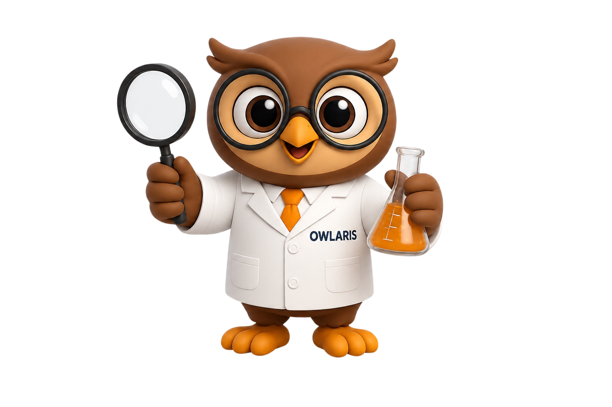
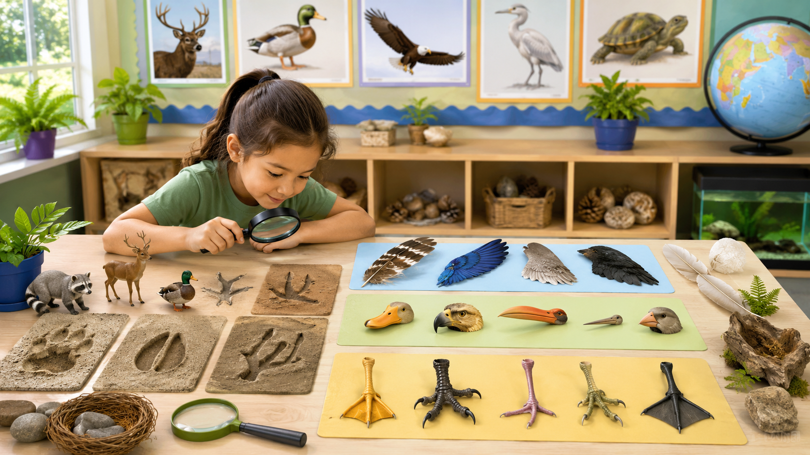

Observar · comparar · clasificar
Locomoción y estructuras externas
Hoy serás detective de pistas animales. Vas a observar cómo se mueven, qué estructuras tienen y cómo puedes clasificarlos.

Mira cada detalle: alas, patas, pico, trompa, hocico y forma de moverse.
